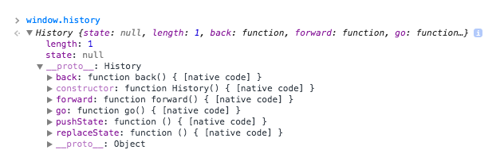

History API and Routing
Why do we need History API?
The HTML5 History API gives developers the ability to modify a website’s URL
without a full page refresh. This is particularly useful for loading portions of a page with JavaScript,
such that the content is significantly different and warrants a new URL.
Here’s an example. Let’s say a person navigates from the homepage of a site to the Help page. We’re loading
the content of that Help page with Ajax. That user then heads off to the Products page which we again load
and swap out content with Ajax. Then they want to share the URL. With the History API, we could have been
changing the URL of the page right along with the user as they navigate, so the URL they see (and thus share
or save) is relevant and correct.
A Quick History
The most significant thing with these history API’s is that they don’t reload the page. In the past, the
only way to change the URL was to change the window.location which always reloaded the page. Except, if all
you changed was the hash (like how clicking a link doesn’t reload the page).
This lead to the old hashbang method of changing the URL without a full page refresh. Famously, Twitter used
to do things this way and was largely criticized for it (a hash not being a “real” resource location).
Twitter moved aways from that, and was one of the early proponents of this API. In 2012 the
team described
their new approach. Here they outline some of their problems when working at this kind of scale whilst
also
detailing how various browsers implement this specification.
HISTORY API
The History interface allows manipulation of the browser session history, that is the pages visited in the tab or frame that the current page is loaded in.
window.history;For example

These are the methods available to us to manipulate the browser's history.
Traveling through history

window.history.back(); To move backward through historywindow.history.forward();To move forward through history window.history.go(n);Moving to a specific point in historywindow.history.length();Determines the number of pages in the history stackModefying history
In HTML5 we have pushState
and replaceState methods
window.history.pushState([stateObj], [title], [url]); window.history.replaceState([stateObj], [title], [url]); TITEL
All browsers currently ignor this parameter - the title is being changed in all modern browsers using history.push(), but you have to change
the URL. If you only add "#locationhash" it won't change the title, which makes sense.
pushState()
This method create a new entry
in the history of the browser.
STATE OBJECT
State object includes the data we'll needif the state of the web page changes
window.history.state
{entryTime: 51591.855, endpoint: {…}, savedComponentState: null}
endpoint:
clickTrackingParams:"CD8QlDUYAiITCIGLpPiXndcCFQLgHQodhx8AYiibHDILYzQtdmlkZW9zLXVaGFVDVWdtSGJrMXJURmFmNEdHS1ExT1hmUQ=="
watchEndpoint:
startTimeSeconds: 1246
videoId:"k2GtDJKC6HQ"
__proto__: Object
webNavigationEndpointData:
url:"/watch?v=k2GtDJKC6HQ&t=1246s"
webPageType:"WATCH"
__proto__: Object
__proto__: Object
entryTime:51591.855
savedComponentState:nullExample from YouTubeURL
window.history.pushState(null, 'title', 'mystate'); The new history entry's URL is given by this parameter.window.history.pushState(null, 'title', '/mystate'); The new URL can be relative if it need.window.history.pushState(null, 'title', "http://google.com/mystate");The new URL must be of the same origin as the current URL.replaceState() method
history.replaceState() operates exactly like history.pushState() except that replaceState() modifies the current history entry instead of creating a new one.
ROUTING
Router is one of the must-have parts of single page application.
Router knows how to tweak the content of the address bar and notifies the rest of the system for URL changes
Methods of routing
Hash-based routing
What we meant by hash-based routing is using the anchor part of the URL to simulate different content

The routing is possible because changes in the hash don’t trigger page reload.
Reading the route
To read the anchor bit from the URL we may use the following code
var hash = window.location.hash.slice(1);
// or extracting the hash from the entire URL
var hash = window.location.href.split('#')[1] || '';Changing the path
To read the anchor bit from the URL we may use the following code
ar navigate = function (path) {
var current = window.location.href;
window.location.href = current.replace(/#(.*)$/, '') + '#' + path;
}
navigate('rolling-scopes');
A routing revolution with pushState
Now we do not need to use a #. We use a pushState() method to manipulate the history of the browser.
var stateObj = { foo: "bar" };
history.pushState(stateObj, "page 2", "bar.html");